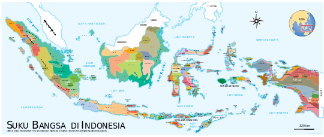

Sinlui3 |
|
Bahasa IndonesiaDi Indonesia, terdapat lebih dari 700 bahasa hidup yang dituturkan hingga saat ini. Angka ini sekaligus menjadi alasan dari sumbangsih Indonesia terhadap sekitar 10% dari jumlah bahasa di dunia membuat Indonesia menjadi negara dengan keanekaragaman bahasa kedua setelah Papua Nugini dengan lebih dari 800 bahasa. Kebanyakan bahasa di Indonesia termasuk dalam rumpun Austronesia, sementara 270 sisanya merupakan bagian dari rumpun Papua. Bahasa Jawa menjadi bahasa yang paling banyak dituturkan di Indonesia. Bahasa-bahasa di Indonesia diklasifikasikan menjadi sembilan kategori, yakni: bahasa nasional, bahasa pribumi, basantara, bahasa asing dan bahasa tambahan, bahasa cagar budaya, bahasa dalam prosesi keagamaan, basantara Inggris, dan bahasa Isyarat.  Ratusan BahasaAda ratusan bahasa daerah yang digunakan di Indonesia. Sebagian besar dari jumlah tersebut digunakan secara lokal di daerah tertentu saja, kategori bahasa yang mengacu pada bahasa yang digunakan di tingkat lokal, regional, yang dituturkan oleh sejumlah kecil orang, mulai dari beberapa sampai beberapa ribu orang4] yang digunakan sebagai bahasa pengantar berbagai etnis. Untuk alasan ini, bahasa-bahasa ini dikenal sebagai regional lingua franca (RLFs) atau "basantara regional". Menurut Subhan Zein, setidaknya ada 43 RLF di Indonesia yang dikategorikan menjadi dua jenis: RLF Melayu dan RLF Non-Melayu. Yang pertama mengacu pada kelompok basantara daerah yang dianggap sebagai varietas asli Melayu atau Indonesia, termasuk bahasa-bahasa seperti bahasa Melayu Ambon, bahasa Melayu Banjar, dan bahasa Melayu Papua. Yang kedua mengacu pada lingua francas daerah yang tidak terkait dengan bahasa Melayu atau bahasa Indonesia, termasuk bahasa Biak, Iban dan Onin. |
|
| Kelompok 4 XI MIPA 3 | |